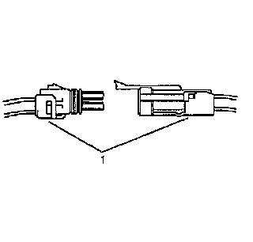
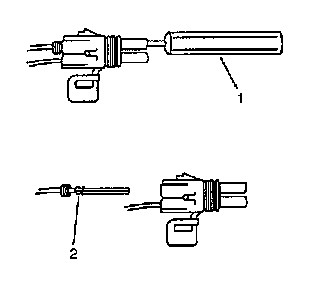

Delphi Connectors (Weather Pack)
Delphi Connectors (Weather Pack)
Tools Required
J-38125 Terminal Repair Kit
The following is the proper procedure for the repair of Weather Pack(R) Connectors.

1. Separate the connector halves (1).
2. Open the secondary lock. A secondary lock aids in terminal retention and is usually molded to the connector (1).
3. Grasp the wire and push the terminal to the forward most position. Hold the wire in this position.

4. Insert the Weather Pack(R) terminal removal tool J 38125-10A (GM P/N 12014012-1) into the front (mating end) of the connector cavity until it rests on the cavity shoulder (1).
5. Gently pull on the wire to remove the terminal through the back of the connector (2).
Important: Never use force to remove a terminal from a connector.
6. Inspect the terminal and connector for damage. Repair as necessary. Refer to Repairing Connector Terminals (Component Tests and General Diagnostics) .
7. Reform the lock tang (2) and reset terminal in connector body.
8. Close secondary locks and join connector halves.
9. Verify that circuit is complete and working satisfactorily.
10. Perform system check.